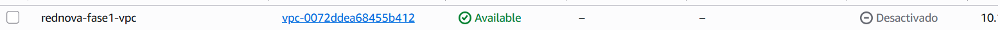
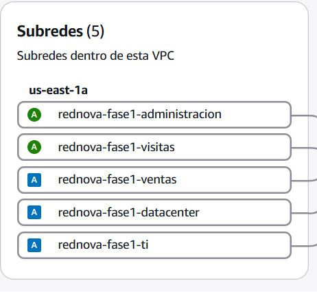
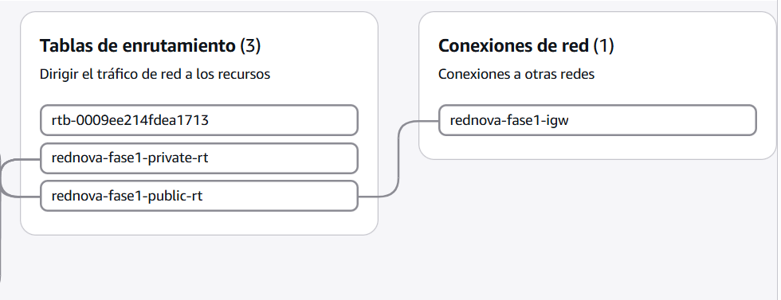
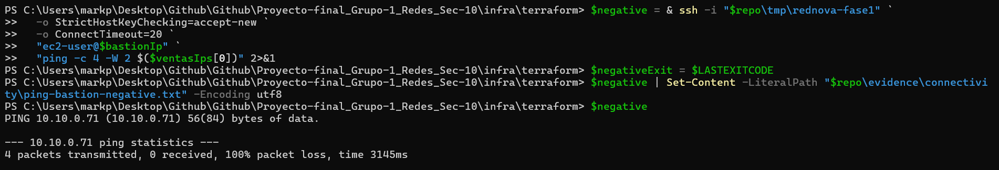

CC3067 Redes · Sección 10 · Grupo 1
RedNova GT
en la nube
Diseño, segmentación y planeación de una VPC segura en AWS.
El punto de partida
Una red que crece necesita límites claros
RedNova GT requiere separar usuarios, operación, servidores y acceso administrativo sin perder capacidad de expansión.
Objetivo de la Fase 1
Diseñar antes de desplegar
Segmentar
Asignar prefijos independientes a Visitas, Ventas, TI, Data Center y Administración.
Proteger
Separar exposición pública y privada; limitar SSH e ICMP a los flujos necesarios.
Reproducir
Expresar VPC, rutas, grupos de seguridad y cómputo temporal mediante Terraform.
Criterio rector: cada afirmación se clasifica como diseño propuesto, validación local reproducible o evidencia observada en AWS.
Arquitectura lógica
Una VPC, dos dominios de exposición
- Públicas: Visitas y Administración.
- Privadas: Ventas, TI y Data Center.
- Sin asignación automática de IP pública.
- El bastión es el único punto administrativo expuesto.
Cálculo de capacidad
En AWS no basta con restar red y broadcast
AWS reserva las primeras cuatro direcciones y la última de cada subred IPv4.
El prefijo mínimo para una demanda H se obtiene con:
Ejemplo: Ventas
Demanda: 25 usuarios
El mínimo matemático, /27, ofrece 27 direcciones asignables: apenas dos libres.
Se elige 10.10.0.64/26, con 59 asignables y una ocupación prevista de 42.37 %.
Decisión: priorizar holgura operativa sobre el ajuste mínimo.
Mapa del espacio de direcciones
El /24 queda cubierto sin huecos ni solapamientos
/26
/26
/27
/28
/28
/26
| Segmento | CIDR | Asignables en AWS | Rango utilizable |
|---|---|---|---|
| Visitas | 10.10.0.0/26 | 59 | .4 – .62 |
| Ventas | 10.10.0.64/26 | 59 | .68 – .126 |
| TI | 10.10.0.128/27 | 27 | .132 – .158 |
| Data Center | 10.10.0.160/28 | 11 | .164 – .174 |
| Administración | 10.10.0.176/28 | 11 | .180 – .190 |
Enrutamiento deliberado
Pública no significa expuesta por defecto
Tabla pública
0.0.0.0/0Internet Gateway
Tabla privada
10.10.0.0/24Ruta local únicamente
- Todas las subredes desactivan la IP pública automática.
- Sólo el bastión solicita una IP pública de forma explícita.
- No se utiliza NAT Gateway en la Fase 1.
- La ruta local mantiene el tráfico privado dentro de la VPC.
Modelo de confianza
Denegar por defecto; habilitar sólo el flujo necesario
| Componente | Entrada permitida | Salida | Razón |
|---|---|---|---|
| Bastión | TCP/22 desde una IP /32 | Sólo VPC | Punto administrativo controlado |
| Ventas | TCP/22 desde SG del bastión | Sólo VPC | No aceptar SSH arbitrario |
| Ventas | ICMP desde el mismo SG | Sólo VPC | Ping privado A ↔ B |
Discos
Volúmenes GP3 de 8 GiB cifrados.
Metadatos
IMDSv2 obligatorio en las EC2.
Secretos
Llaves, estado y variables sensibles fuera de Git.
Infraestructura como código
El diseño puede revisarse y repetirse
network.tf: VPC, subredes y rutas.security.tf: políticas de tráfico.compute.tf: bastión y dos EC2 privadas.enable_compute=falsepor defecto.
resource "aws_instance" "ventas" { count = var.enable_compute ? 2 : 0 subnet_id = aws_subnet .segments["ventas"].id associate_public_ip_address = false metadata_options { http_tokens = "required" } }
Ventana controlada de ejecución
Validar, desplegar, demostrar y retirar
Validar
Identidad, región, formato, sintaxis y presupuesto.
Planificar
Revisar cada alta propuesta antes de cambiar AWS.
Aplicar
Crear red y cómputo durante una ventana controlada.
Probar
Comprobar ping privado, aislamiento y trazabilidad.
Destruir
Eliminar los recursos y auditar el cierre del entorno.
Ciclo observado: la aplicación y las pruebas quedaron registradas. El retiro de recursos se conserva como práctica operativa de control de costos después de cada ventana temporal.
Resultados verificables
Las cinco comprobaciones quedaron verificadas
| Prueba | Propiedad | Estado |
|---|---|---|
| P-01 | Capacidad, contención y no solapamiento CIDR | Verificada |
| P-02 | Formato y validez de Terraform | Verificada |
| P-03 | Planificación contra AWS | Verificada |
| P-04 | Ping privado entre Ventas A y B | Verificada |
| P-05 | Rechazo ICMP desde el bastión | Verificada |
Lectura correcta: el diseño, la validación local, el apply y el tráfico real están acreditados con evidencias independientes.
Evidencia genuina en AWS
Arquitectura materializada en AWS

VPC disponible: rednova-fase1-vpc · vpc-0072ddea68455b412.

us-east-1a.
apply.Pruebas P-04 y P-05
Conectividad permitida; acceso indebido bloqueado
PS> ping 10.10.0.79 Origen: 10.10.0.71 Destino: 10.10.0.79 4 packets transmitted 4 received 0% packet loss rtt avg = 0.337 ms

10.10.0.71.Resultado de la fase
La Fase 1 quedó completa
- Direccionamiento canónico y validado.
- Separación pública y privada documentada.
- Políticas de acceso mínimo expresadas en código.
- Plan y despliegue aceptados por AWS.
- Conectividad privada y aislamiento comprobados.
- Cinco pruebas técnicas verificadas con evidencia.
5 de 5 verificadas
P-01 a P-05 finalizaron con el resultado esperado: consistencia CIDR, validación Terraform, planificación AWS, conectividad privada y aislamiento.
La implementación, la conectividad y el aislamiento completan el alcance académico solicitado para esta fase.
Universidad del Valle de Guatemala